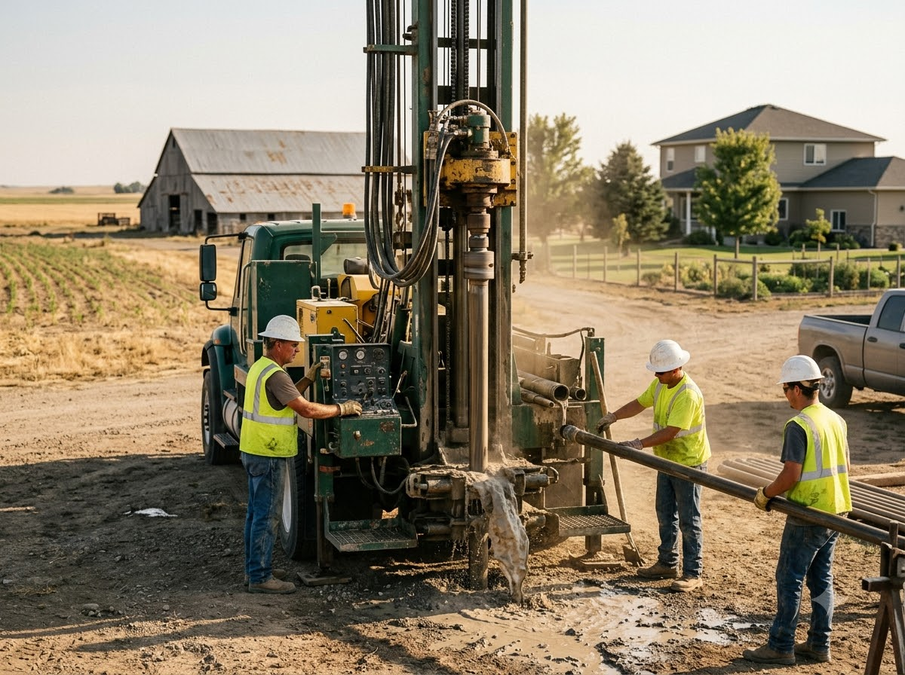
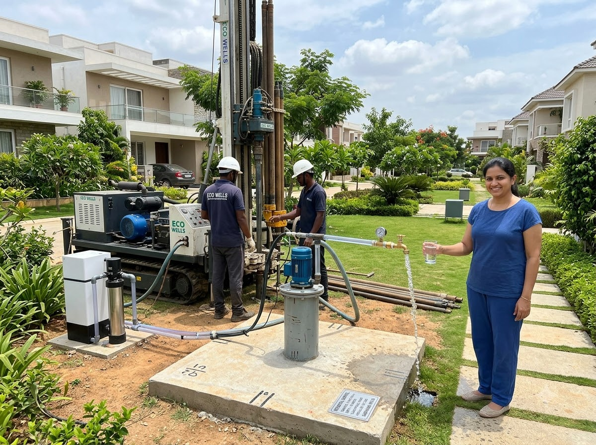
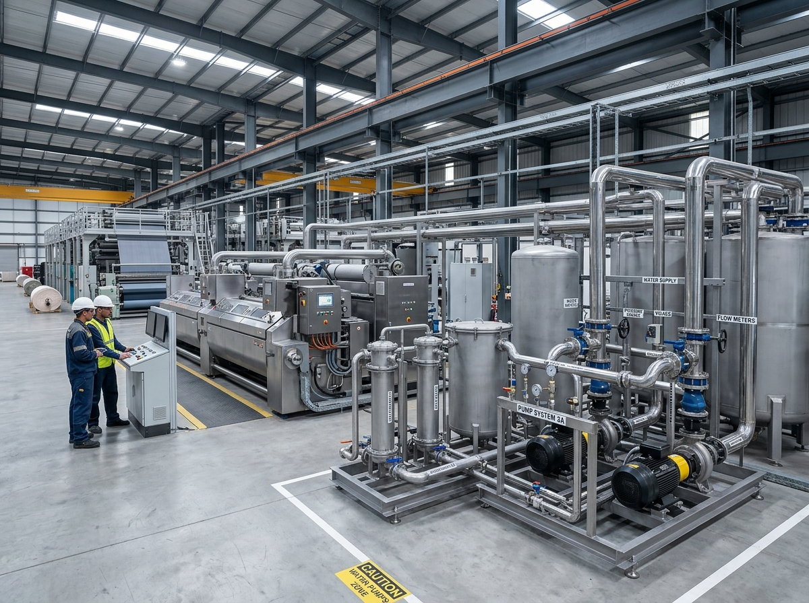
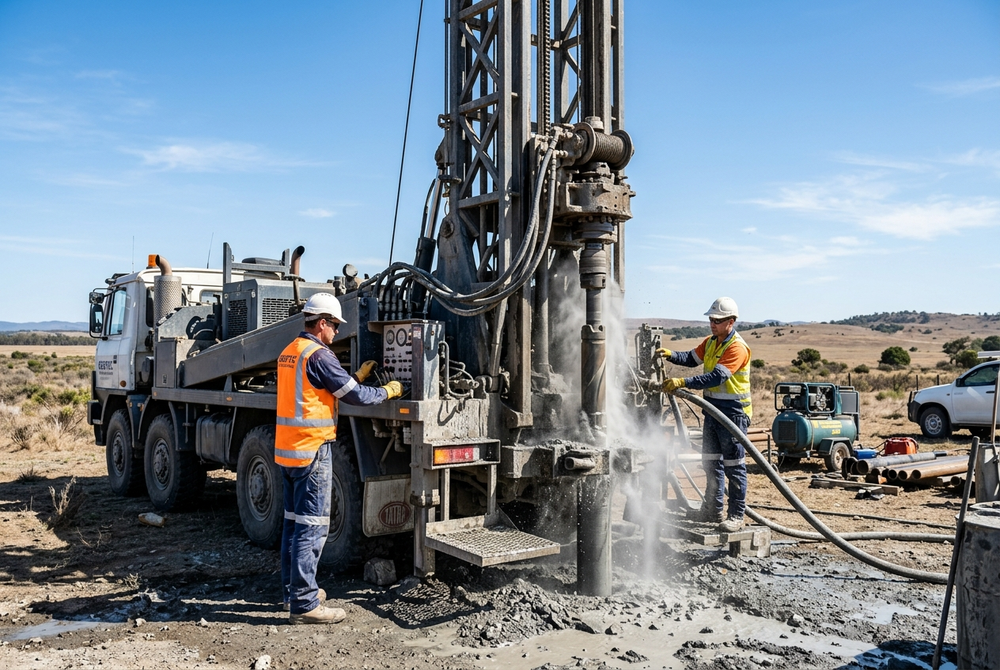
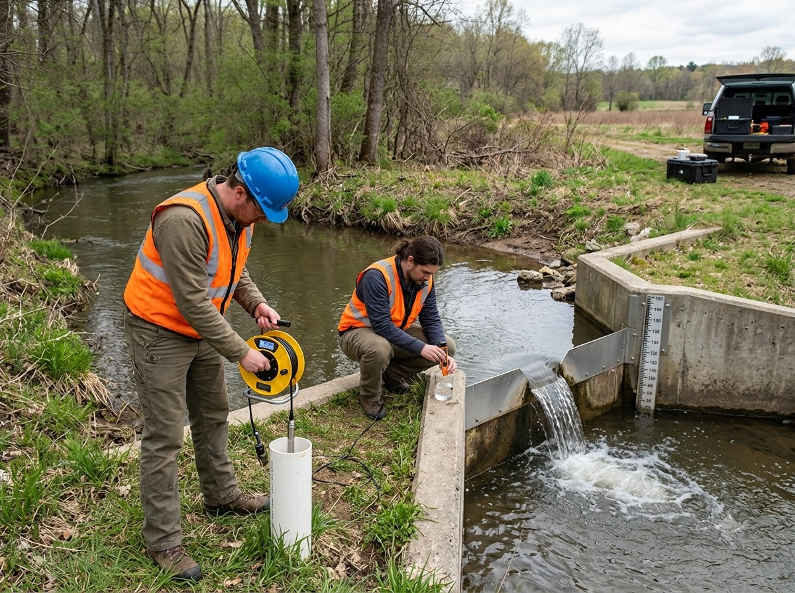
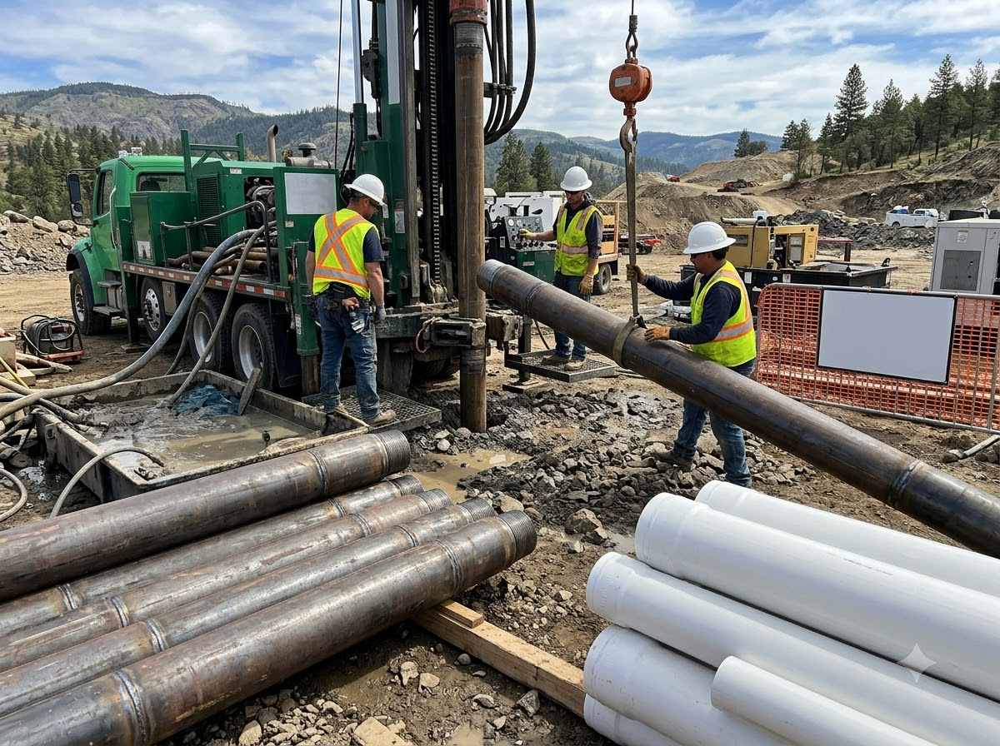
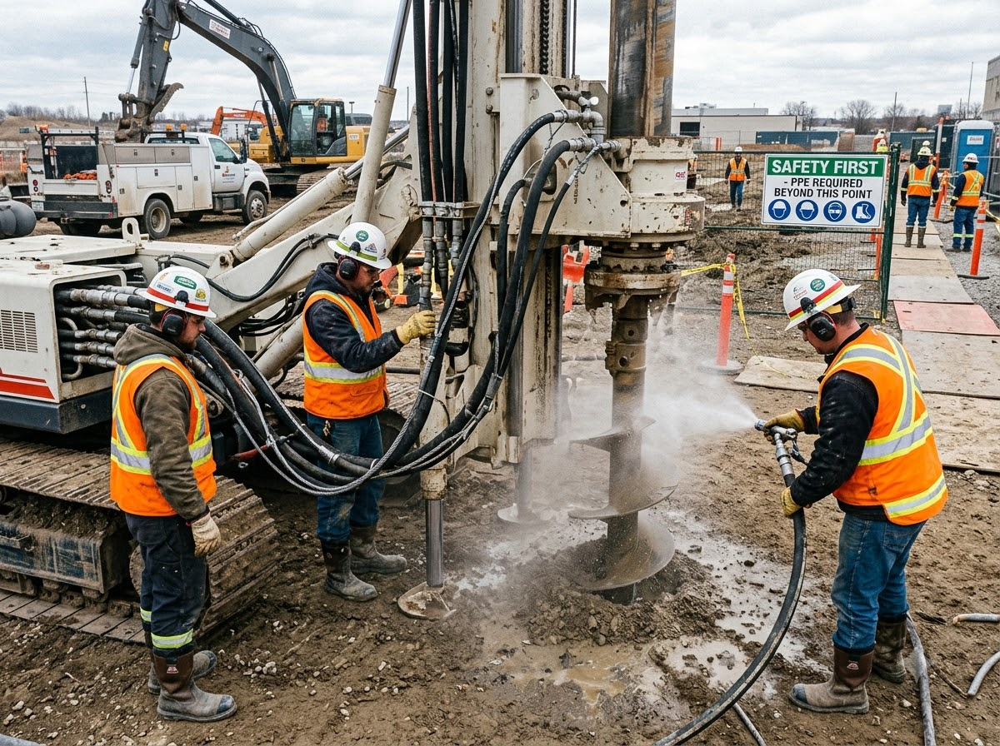
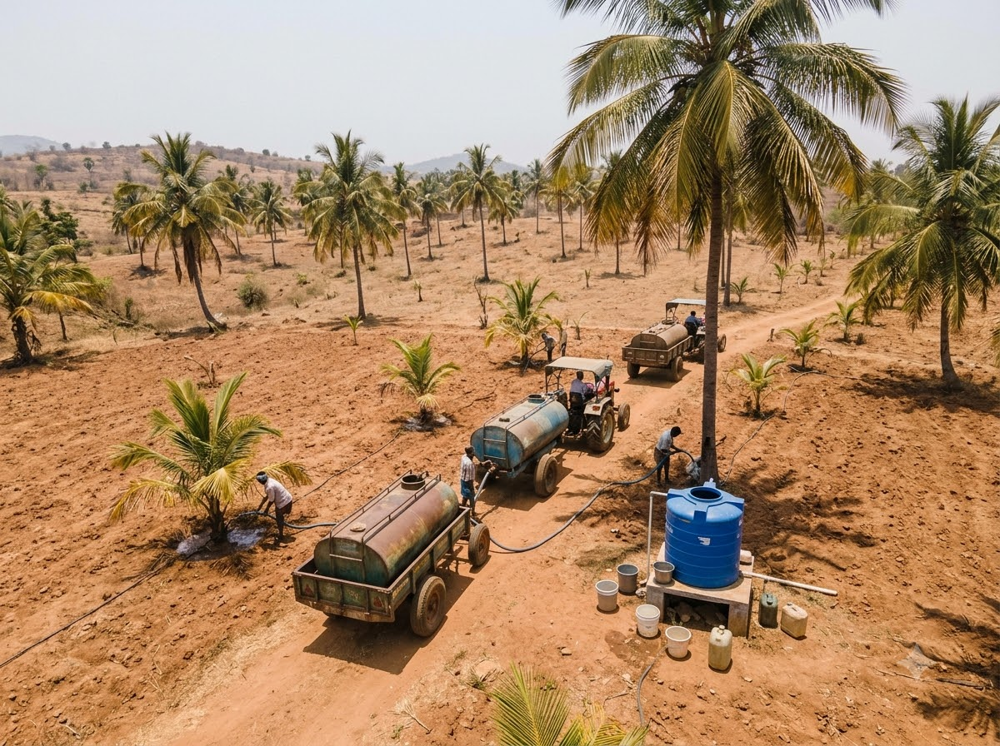
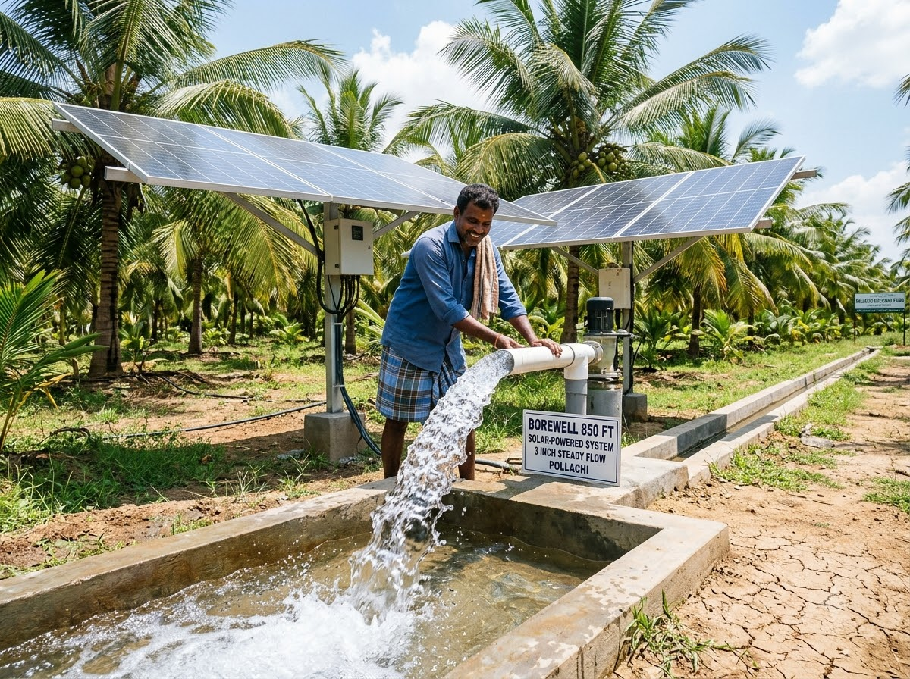

FIND WATER.
BUILD CONFIDENCE.
Professional borewell drilling and groundwater solutions designed for residential, agricultural, commercial, and industrial requirements.

Borewells Completed
Years Experience
Project Success Rate
Locations Served
Borewell Solutions by Application
Tailored borehole diameter, casing materials, and pump configurations engineered for specific consumption demands.

DomesticResidential Borewells
Compact 4.5" to 6.5" wells for individual villas, gated communities, and apartments with clean potable water output.
Enquire Now → High Volume
High Volume
Agricultural Borewells
Heavy-yield 6.5" to 8" irrigation wells powered by solar or grid submersible motors for farms, orchards, and plantations.
Enquire Now → Continuous
Continuous
Commercial Borewells
High-capacity continuous duty pumping wells for hospitals, educational institutions, hotels, and retail malls.
Enquire Now →
Heavy DutyIndustrial Borewells
Deep aquifer exploration, heavy mild steel casing, telemetry sensors, and compliance certification for manufacturing plants.
Enquire Now →How We Work
A rigorous engineering roadmap from soil profiling to guaranteed water flow handover.
Site Inspection
Ground assessment & machine access planning.
Groundwater Study
Geophysical survey to pinpoint water veins.
Drilling & Casing
High-speed DTH drilling with heavy casing insertion.
Water Testing
Flow rate measurement and potability tests.
Pump Setup
Submersible motor and electrical panel setup.
Final Handover
Lithology log report & warranty delivery.
Professional Equipment. Precise Execution.
Our drilling operations use dependable equipment and practical field techniques suited to different ground conditions and project requirements.
Heavy-Duty Drilling Equipment
Truck and crawler mounted DTH rigs capable of penetrating 1,500+ feet in granite.
Professional Casing Systems
ISI Class-A PVC and welded steel casing pipes to prevent surface water seepage and caving.
Water Level & Pumping Instruments
Electronic dip meters, V-notch flow gauges, and calibrated TDS digital testers.
Rigorous Site Safety Protocols
Certified safety gear, dust suppression, and high-pressure hose whip-checks on every rig.




Before & After Project Transformation
See how scientific site surveying and precision drilling convert dry, water-stressed plots into self-sufficient groundwater assets.

BEFORE
AFTERPollachi Coconut Plantation • 850 Ft Borewell
Before: 12 Acres of crops struggling with tanker deliveries • After: 3-inch steady water stream with automated solar submersible system.
Answers to Common Borewell Questions
Clear engineering guidance so you can make informed decisions about your property.